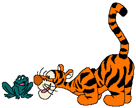
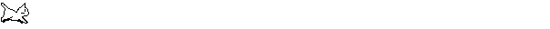
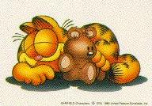

My Favorites
'Nsync is the best music group ever! Plus I am going to see them in concert on July 22. It is going to be so cool. I am going to party all night and listen to them sing and watch then dance. Going on, Charmed is the best TV. show ever! I never miss an Ep. and I tape every one of them. I love to watch them over and over again. It never gets boring. I am totally a Charmed fanatic and I always will be.

Gloria_2003 |








This is the coolest place on Earth to be in the Summer of 2000!
http://www.cs.brown.edu/orgs/artemis/
Links: